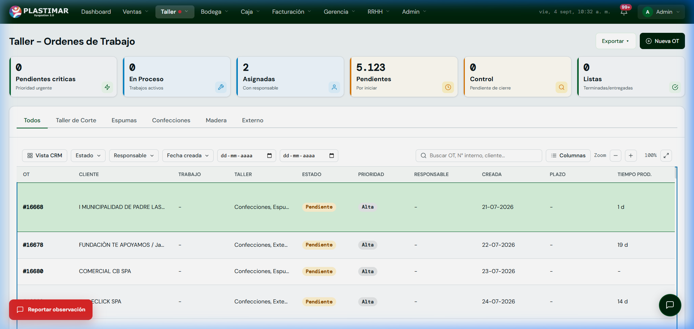

1. Tu Rol en el ERP Plastimar
Fabricación y CalidadEl equipo de taller transforma las materias primas en los productos didácticos, colchonetas y mobiliario escolar que caracterizan a Plastimar. En el nuevo sistema, cada trabajo está respaldado por una Orden de Trabajo (ODT) digital que asegura que fabriquemos exactamente lo que el cliente compró, con la fecha de entrega acordada.
Doble Nivel de Acceso en Taller
Jefe de Taller: Planifica las ODTs, asigna operarios responsables, supervisa tiempos y aprueba el Control de Calidad.
Operarios de Taller: Utilizan una pantalla simple y táctil para registrar el inicio, avance y término de su estación.
2. Las Estaciones de Producción
EspecialidadesEn la cabecera del módulo de Taller encontrarás pestañas dedicadas para cada taller físico:
✂️ Taller de Corte
Corte de piezas textiles, trazado de patrones y control del rendimiento de metros lineales de rollos.
🧽 Espumas
Dimensionado de bloques de espuma, ensamble de densidades (D21, D25, D30, aglomerados) y pegado.
🧵 Confecciones
Costura industrial, colocación de cierres de nylon, velcros, vivos reforzados y enfundado final.
🪵 Madera
Corte y armado de estructuras de madera MDF y pino, plataformas y mobiliario didáctico.
Regla de Oro Nº 4: Prohibido producir sin ODT oficial
Ningún operario corta telas, espuma o madera por solicitudes verbales. Todo consumo debe estar asociado a una ODT activa en el sistema. Así garantizamos que las materias primas se descuenten de bodega y el cliente reciba su pedido a tiempo.
3. Panel de Órdenes de Trabajo (Jefatura de Taller)
Mesa de ControlAl ingresar a Taller → Órdenes de Taller verás el tablero central de producción:

Procedimiento Diario del Jefe de Taller
Revisar ODTs Pendientes y Priorizar por Fecha
Filtra por Pendientes y ordena por Fecha Comprometida (Plazo). Las ODTs marcadas como Prioridad Alta corresponden a ventas con compromiso de entrega próximo que deben ingresar inmediatamente a corte y armado.
Asignar Operario Responsable
Abre el detalle de la ODT y asigna a los operarios responsables de cada estación (por ejemplo: Jenifer en Confección, Mercedes en Corte). La orden cambiará a estado Asignada y aparecerá en el terminal del trabajador.
Monitorear el Avance de Taller
A medida que los operarios marcan inicio y término en sus pantallas, el indicador de tiempo de producción se actualiza en tiempo real, permitiendo alertar posibles retrasos antes del vencimiento del plazo.
Control de Calidad y Cierre
Una vez terminada la fabricación física, el jefe de taller inspecciona las terminaciones, costuras y dimensiones:
- Si es conforme: Presiona Aprobar Calidad sólo por la cantidad revisada. Verifica el estado final; Bodega/Despacho deben consultar la disponibilidad.
- Si hay Defectos: Presiona Rechazar para Reproceso. Es obligatorio indicar la causa (ejemplo: medida de funda desfasada en 2 cm) para que la estación corrija el error.
4. Modo Operario (Terminal de Avance)
Uso en PlantaLos operarios en las mesas de corte y confección tienen una vista simplificada sin botones administrativos:
- Ingresan al terminal con su cuenta personal (ejemplo:
jenifer.breidenbach@plastimar.cl). - Ven únicamente la lista de trabajos asignados a su mesa para el día.
- Presionan [Iniciar Tarea] al comenzar el corte o costura y esperan confirmación.
- Si deben pausar por colación o cambio de turno, presionan [Pausar].
- Al finalizar, presionan [Finalizar] e informan sólo la cantidad realmente terminada; un avance parcial no debe cerrarse como total.
¿Falta una materia prima en la receta o plano confuso?
Si una ODT solicita una tela que no coincide con el didáctico o faltan especificaciones de medidas en la ficha:
Usa el botón flotante rojo [Reportar observación] abajo a la izquierda. Indica el número de ODT y la discrepancia para que el área técnica o comercial ajuste la ficha de fabricación.
5. Avances, excepciones y ficha del operario
Control de producción- La automatización hacia Taller aplica a productos configurados como transitorios; sin stock no significa siempre ODT automática.
- Registra cantidades parciales reales sin exceder el pendiente.
- Documenta defecto, reproceso, descarte, material y merma cuando el flujo lo habilite.
- No crees una segunda ODT para compensar una inconsistencia.